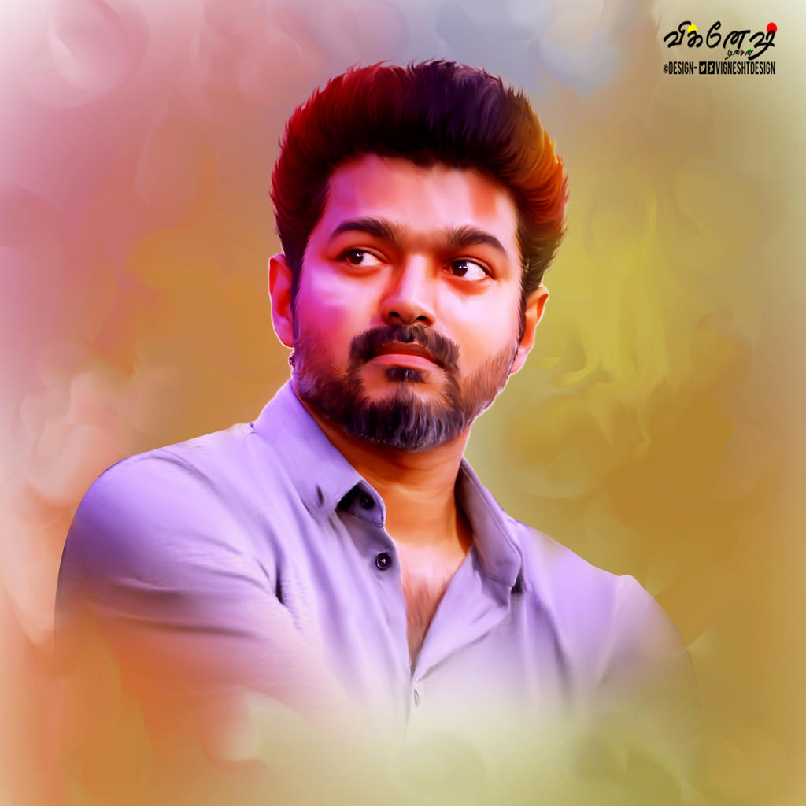

King Of Kollywood
Joseph Vijay Chandrasekhar (born 22 June 1974), known professionally as Vijay, is an Indian actor and playback singer who works in Tamil cinema. In a career spanning in just over 3 decades, Vijay has acted in over 65 films and is one of the most commercially successful actors in Tamil cinema with multiple films amongst the highest-grossing Tamil films of all time and is amongst the highest paid actors in India.
Man Of Masses

Born in Madras to director S. A. Chandrasekhar, Vijay made his debut as a child actor in the Tamil film Vetri (1984). After a view roles as a child actor in his father’s films, he played his first lead role in the film Naalaiya Theerpu (1992) at the age of 18. Vijay continued doing lead roles for the next few years with hat-trick results, notable films amongst them included Poove Unakkaga, Love Today, Kadhalukku Mariyadhai, Thulladha Manamum Thullum and Kushi. In 1998, he was awarded Kalaimaamani by the Government of Tamil Nadu.
Face Of Kollywood
In 2004, he starred in Ghilli, which became the first Tamil film to gross over ₹50 crore and with subsequent success of Thirupaachi and Pokkiri later, he established himself as one of the leading and commercially successful actors in Tamil cinema. Following a period of moderate success, Vijay acted in various critically and commercially successful films starting in the late 2010s including Thuppakki, Kaththi and Sarkar. He has won several awards as an actor.